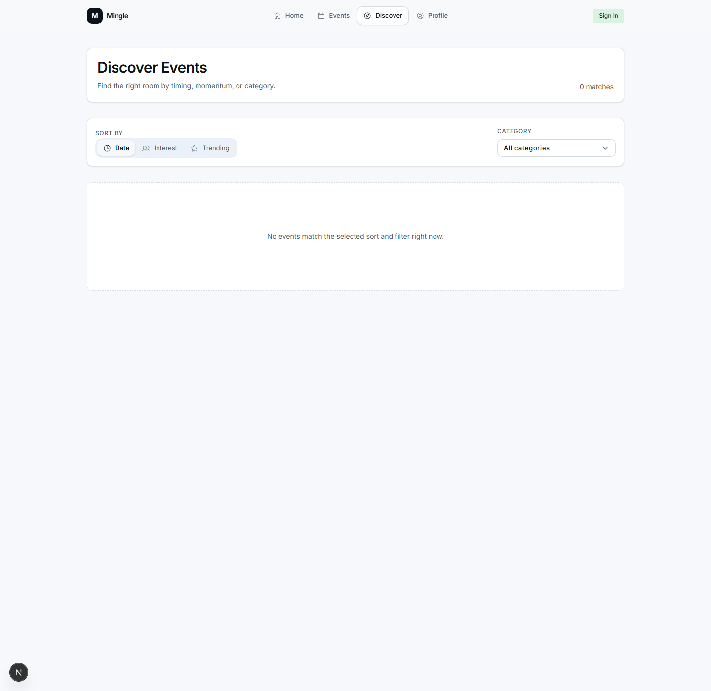
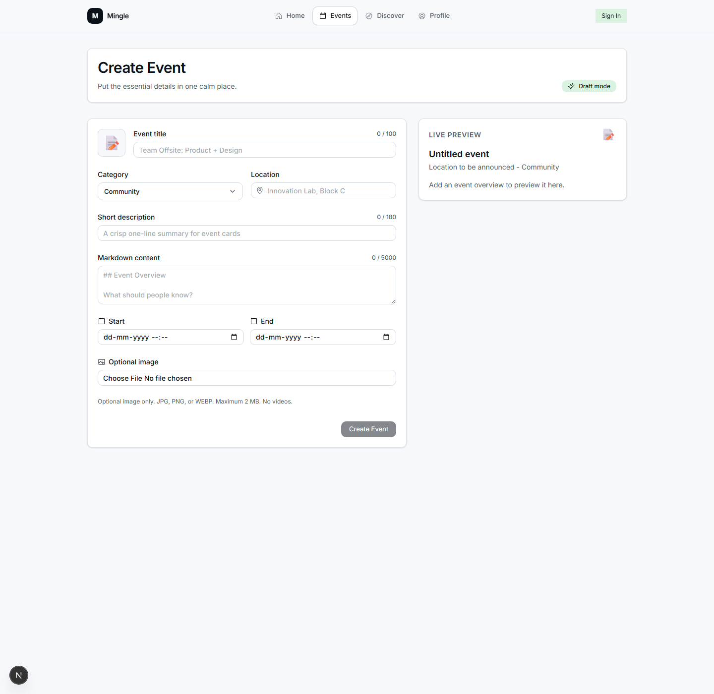
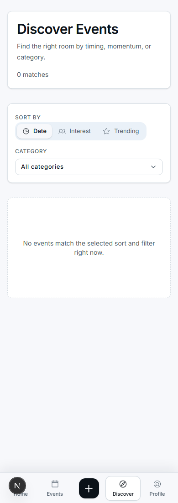
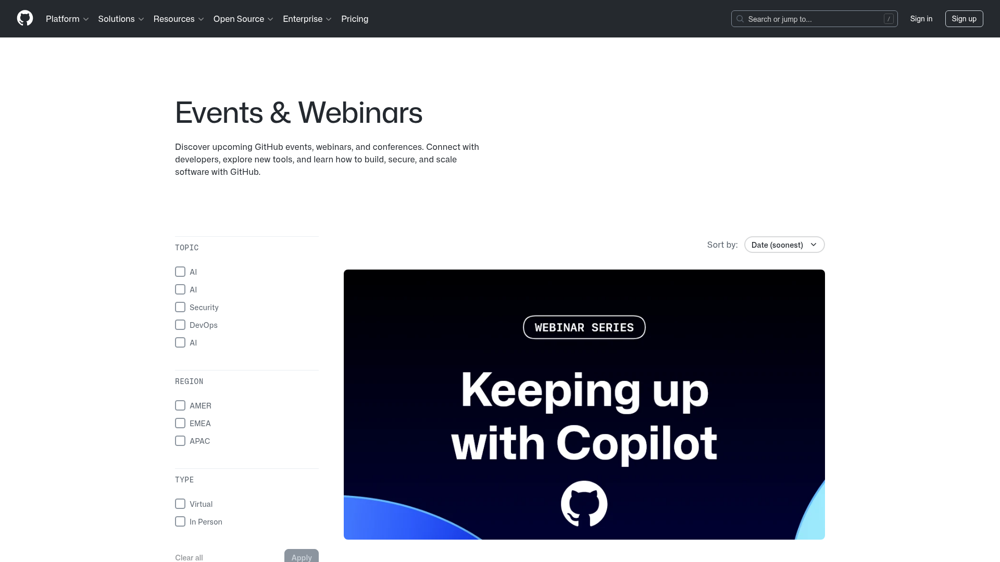
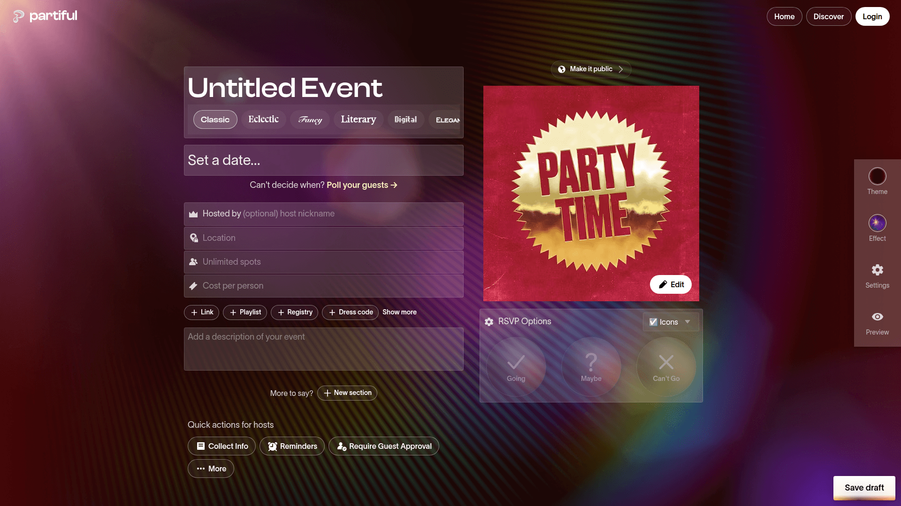

Mingle Events UI Improve
Lazyweb-backed design pass captured on 2026-05-03.
Current Screens



References



Implemented
- Fluid Functionalism controls for buttons, tabs, select, badges, tooltip, and input groups.
- Native
datetime-localscheduling inputs instead of custom calendar UI. - Cleaner event-card layout with stable media, metadata, category icons, and safer share behavior.
- Composer empty state fixed so placeholders, counters, and live preview agree.
- Desktop/mobile navigation spacing cleaned up and Next 16 proxy/config warnings removed.